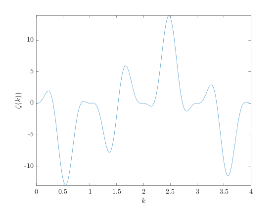
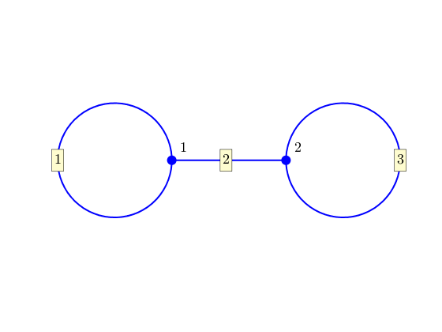
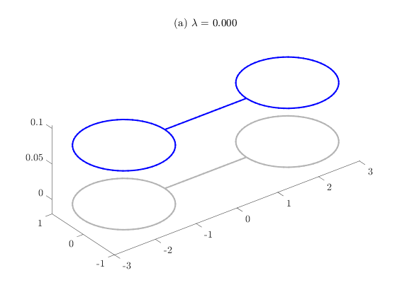
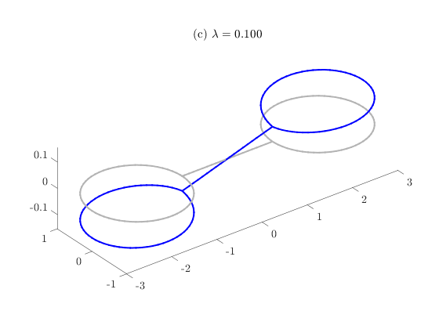
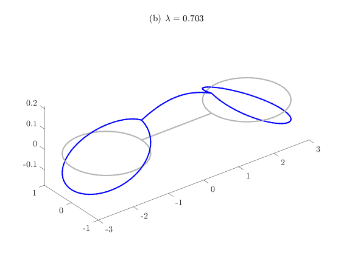
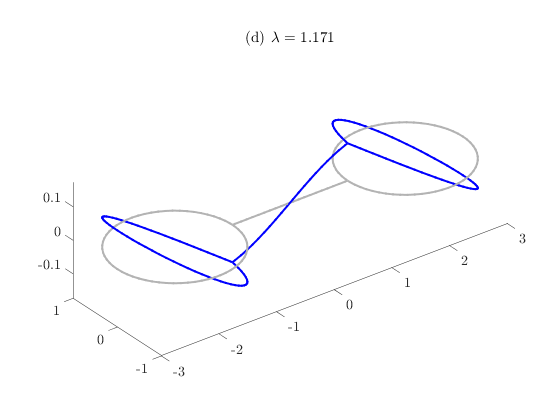
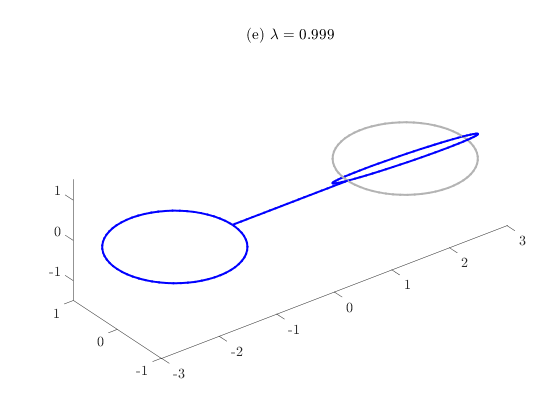
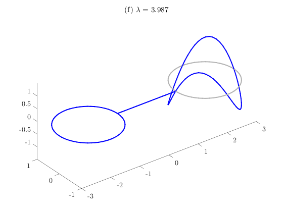

Contents
- Dumbbell Laplacian program
- Set up the graph structure and coordinates of the problem
- Calculate and plot the secular determinant of the quantum graph
- Set up coordinates on which to plot the solutions
- Construct the Laplacian and calculate its eigenvalues and eigenvectors
- Plot the first few multiplicity-one eigenfunctions
- Plot the first few multiplicity-two eigenfunctions
Dumbbell Laplacian program
Computes the eigenvalues and eigenfunctions of the Laplace operator
function dumbbellEigenfunctions
Set up the graph structure and coordinates of the problem
LVec=[2*pi,2, 2*pi];
nX=[63, 20, 63];
Phi = quantumGraph([1 1 2],[1 2 2],LVec,'nxVec',nX);
Calculate and plot the secular determinant of the quantum graph
f = secularDet(Phi); fplot(f,[0 4]) xlabel('$k$') ylabel('$\zeta(k))$')
Set up coordinates on which to plot the solutions
Note that the user has to create the plotting function Note further, you could also add this by adding the key-value pair 'PlotCoordinateFcn',@dumbbellPlotCoords to the above line of code Phi = quantumGraph(...
Phi.addPlotCoords(@dumbbellPlotCoords);
Phi.plot('layout')
 Construct the Laplacian and calculate its eigenvalues and eigenvectors
A little cleanup needed because the null eigenvalue is sometimes calculated as positive and sometimes as negative and this screws up the sorting.
[V,lambda]=eig(Phi); [singles,doubles,~]=separateEigs(lambda); % No triple eigenvalue unless handle and hoops resonant nToPlot=4; letters='acbd';
Plot the first few multiplicity-one eigenfunctions
for k=1:nToPlot
figure
Phi.plot(V(:,singles(k)))
title(sprintf('(%s) $\\lambda = %0.3f$', letters(k),lambda(singles(k))));
    end letters='ef';
Plot the first few multiplicity-two eigenfunctions
for k=1:nToPlot/2
figure
[v1,~]=dumbbellResolveDoubles(V,doubles(k));
Phi.plot(v1)
title(sprintf('(%s) $\\lambda = %0.3f$', letters(k), lambda(doubles(k))));
% title(sprintf('Eigenfunction %i, \\lambda = %0.3f',doubles(k), lambda(doubles(k))));
  end